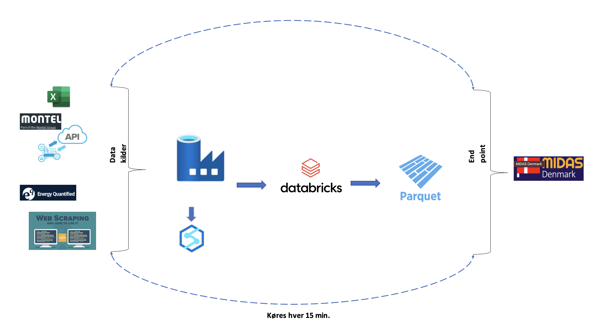
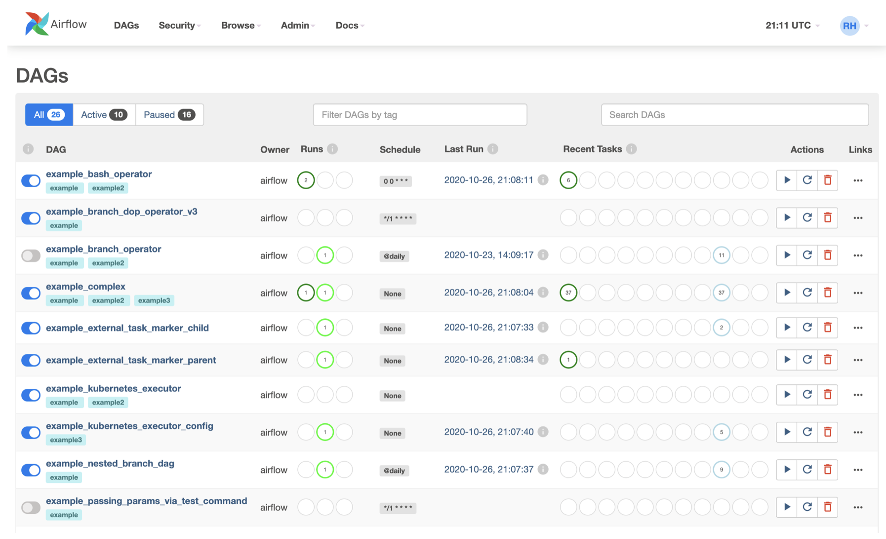
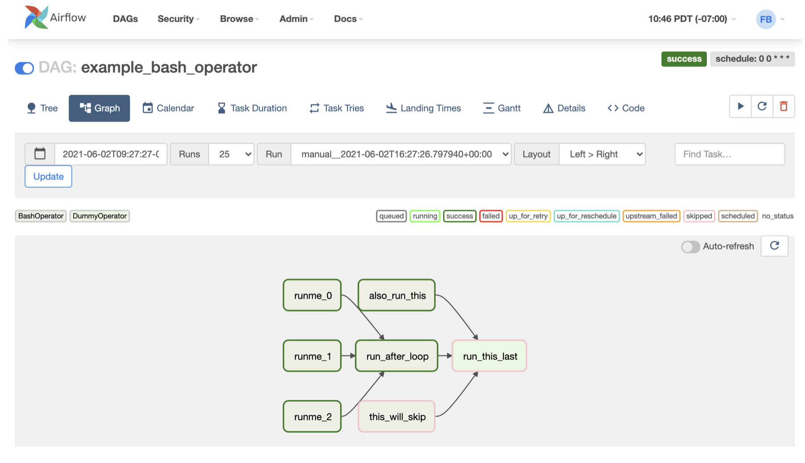

Case
Contents
Case#
Afdelingen Portfolio Managements primære opgave er at forvalte virksomhedens kunderelaterede energiporteføljer, både på forbrugs- og produktionssiden. En af afdelingens opgaver er, at lave prisberegningen på fastpriserne hos EWII. Beregningen er med til at kvalificere priser på timeniveau til og med 2032, og der kigges på data 5 år tilbage for at kunne lave beregningen. Selve beregningen består af både r- og python-scripts (9 i alt), som varierer i forhold til hvornår de køres og hvor lang tid de tager at køre. Det script der tager længst tid køres hver anden uge og tager 16-20 timer at køre, mens der også køres scripts hvert kvarter som tager 40 sekunder at køre.
Der hentes data fra flere forskellige datakilder til at kvalificere timepriserne som tæller portaler som Energy Quanitified (EQ) og Montel, hvor der både indhentes data via API og Data Scraping. Derudover hentes der også data fra manuelle Excel-filer til at identificere helligdage.
Outputtet af kørslerne bliver i dag lagt på et lokalt drev, og derfra indlæses det manuelt i Midas og Elviz en gang i timen eller hver anden time. Optimalt set skulle dette gerne foregå automatisk når en ny fil ligger klar hvert kvarter.
Alt dette køres i dag på en lokal computer, som medarbejderne i Portfolio Management selv igangsætter.
Flaske halse#
Ikke rådført mig med nogen.
Python og R.
Er der et env?
Kendes lineage?
Fremgangsmåde#
Min fremgangsmåde til begge løsningerne er altid:
Tag fat i opgave giveren og få set den gamle process.
Brug min viden til at finde mulige løsninger og teknologier.
Eventueller kurser der kan lære en de mangler.
Dyk ned i de enkelte løsninger og afdæk hvad der bedst tilfredstiller behovet.
Peer review.
Tag fat i stakeholder og vis løsning.
Azure#
For at løse ovenstående problem har jeg valgt at fokuser på Azure og de forskellige værktøjer der høre med. Her er formålet at flytte hele det setup Portfolio Management har lavet op i Azure.. Det kræver følgende Azure services og processer for at flytte det op.
Azure Data Factory, som kan bygge hele processen.
For håndtering af store datasæt kan man bygge et python script i
Databrickstil beregninger.Hvis databrick er overkill kan man bruge
Azure Batcheller andre værktøjer.
Output skal gemmens i en dataholder, som så kan linkes til Midas.
Her kan man diskuterer hvordan output skal gemmes. For tiden er
parquetmeget populær grundet det er Column-based format hvor csv er row-based format. For en uddybning se denne artikel.
Hele den process jeg har i hovedet kan ses i følgende tegning:

Airflow#
Airflow er et værktøj til at orkester ens workflow. Her er alt bygget i Python, som også kan kobles op til Azure:
import os
from datetime import datetime, timedelta
from airflow.models import DAG
try:
from airflow.operators.empty import EmptyOperator
except ModuleNotFoundError:
from airflow.operators.dummy import DummyOperator as EmptyOperator # type: ignore
from airflow.providers.microsoft.azure.operators.data_factory import AzureDataFactoryRunPipelineOperator
from airflow.providers.microsoft.azure.sensors.data_factory import AzureDataFactoryPipelineRunStatusSensor
from airflow.utils.edgemodifier import Label
ENV_ID = os.environ.get("SYSTEM_TESTS_ENV_ID")
DAG_ID = "example_adf_run_pipeline"
with DAG(
dag_id=DAG_ID,
start_date=datetime(2021, 8, 13),
schedule_interval="@daily",
catchup=False,
default_args={
"retries": 1,
"retry_delay": timedelta(minutes=3),
"azure_data_factory_conn_id": "azure_data_factory",
"factory_name": "my-data-factory", # This can also be specified in the ADF connection.
"resource_group_name": "my-resource-group", # This can also be specified in the ADF connection.
},
default_view="graph",
) as dag:
begin = EmptyOperator(task_id="begin")
end = EmptyOperator(task_id="end")
# [START howto_operator_adf_run_pipeline]
run_pipeline1 = AzureDataFactoryRunPipelineOperator(
task_id="run_pipeline1",
pipeline_name="pipeline1",
parameters={"myParam": "value"},
)
# [END howto_operator_adf_run_pipeline]
# [START howto_operator_adf_run_pipeline_async]
run_pipeline2 = AzureDataFactoryRunPipelineOperator(
task_id="run_pipeline2",
pipeline_name="pipeline2",
wait_for_termination=False,
)
pipeline_run_sensor = AzureDataFactoryPipelineRunStatusSensor(
task_id="pipeline_run_sensor",
run_id=run_pipeline2.output["run_id"],
)
# [END howto_operator_adf_run_pipeline_async]
begin >> Label("No async wait") >> run_pipeline1
begin >> Label("Do async wait with sensor") >> run_pipeline2
[run_pipeline1, pipeline_run_sensor] >> end
# Task dependency created via `XComArgs`:
# run_pipeline2 >> pipeline_run_sensor
from tests.system.utils.watcher import watcher
# This test needs watcher in order to properly mark success/failure
# when "tearDown" task with trigger rule is part of the DAG
list(dag.tasks) >> watcher()
from tests.system.utils import get_test_run # noqa: E402
test_run = get_test_run(dag)
Denne framework giver en ui som kan sætte processer i gang:

Hver af disse opgaver er en DAG og de kan man splitte ned for at se hvordan kørelsen er gået:
